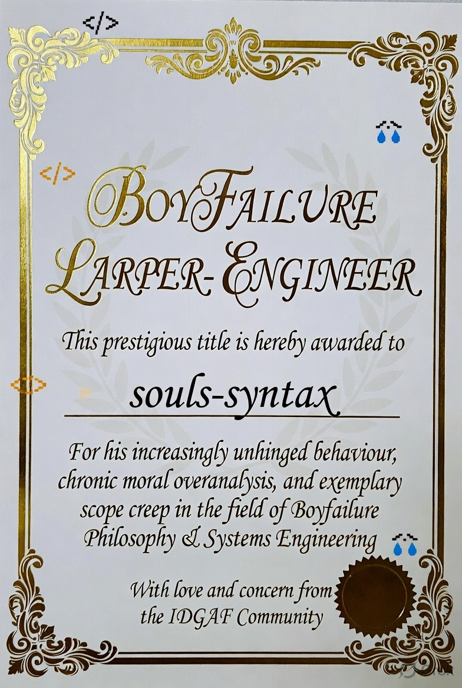

![[banner gif]](../gifs/banner.gif)
Menu
About Me
Resume
Blog
Projects
Fun Projects
Social
GuestBook
Friends
[ Shashwat ]
[ seivarya ]
[ Saad ]
[ Saar ]
Status
✓ site is up
since 2026-05-26
Now Playing
...
...

![[gif]](../gifs/main_header.gif)
My random thoughts, I dump them here
[2026-07-12]
Just a thought I had, idk why but maybe it's me reading way too much or idk things in general, but there seems to be like a sudden skill creep. It used to be good signal for someone who can develop a full stack projects, a site. It was good, it involved multiple dicipline and was sufficient. Like I know my seniors who just got by being able to know HTML in their 4th year. Like that seems incomprehensible to me but that is the skill i am talking about. But suddenly in my batch everyone around me can do, a full stack application. It's something mundane expected out of everyone, it's expected you know RAG pipelines, maybe have your own OS experiments, have maybe contribution in some big repositry. Knows ML and all that, whole data science field. Can do system programming, can crunch out CUDA kernels, can write super efficient code, knows rust, knows language very deeply, maybe even wrote your own language. There is this constant rush in just like 2years into my coding journey. And no it's not me imagining everything. Everywhere my eyes goes, everyone in batch is shining like diamond and suddenly that shine becomes baseline while I am still a charcoal.
Knowing Full stack is expected.
Knowing LLMs, DL and ML is expected.
Knowing data engineering is expected.
Knowing cloud computing is expected.
Knowing game development is expected.
Knowing shaders and debugging it is expected.
Knowing and able to write microservices is expected.
Knowing and able to write cuda kernels and do GPU computing is expected.
Knowing and able to write complex systems project is expected.
Able to solve leetcode problems is expected.
Having knight badge atleast is expected.
Having 1600 rating on codeforces atleast is expected.
Having 1400 rating on atcoders atleast is expected.
I wonder if it becomes any easier or maybe dumb me picked something very much out of my league. Not like I can do anything other than keep grinding i guess. hahahahah it's so funny terminology grinding kakakak the word itself implies there would be winners and losers despite the grinding. Some will shine like diamond and some will crumble away i wonder if that is bleak or funny.
[2026-07-12]
Happy birthday to me i guess. Life is fine and all is good. It's just very tiring i guess. Life is hard isn't it, hahahah, i wonder. hmmmmmmm when it will be easier. idk man this whole thing feels scam to me. kkakakaka edgy talk aside things are going fine surely. it should go well, i mean work has been way too much lately, idk what they expect out of me, hmmmm, i guess, i am happy ofc, i get to use pc and all the facility and have so much privelage, i should be super happy about everything right. i guess it's just work fatigue should go away when i have less work hahaha it's kinda funny i have been droning about same free time and stuff like I am ever getting it. You know I have a whole repo on github(private ofc) which have all the things I want to do when I have free time and things have just been added to it in these last 3 years. Life was so good in school day hah.
Let's see how it goes this year, hopefully i get smt to earn money so can live somewhat guilt free life, and be less pathetic and have less self hatered towards myself.
Man Idk why I am coping on internet kekeke kheum , UmU ofc I am the most amazing person. do not let these edgy paras written above bring blimish towards my image UmU. the finest larper/engineer to ever life
Bye my padawans, see in you next episode of dragon ball Z, Muhahahahahah. Man am i cringe, and this garden is slwoly becoming diary instead lmao
Logging out
[2026-07-11 21:39]
So uh well ahahah, mm don't know what to write but well I am gonna turn into an uncle in like 2hrs so thought should have smt written before I become a boomer. Life is going i guess. Am currently stuck doing MAD2 project backend is over by I am lazing about frontend sigh. Deadline is on 14th don't know how I will manage. Things are not good with the life that much but well whose life is good. I have made some friends on discord too i guess. Even tho they are all weirdo(in good way) and like things like C and stuff which is nice. It's pretty difficult to find people who just like computers in this AI-age. Oh from AI i remember I tried codex-cli today, first impression absolutely horrible. gave it a task to write snake game in terminal and it was super buggy, when I tried to find the error well the code base was so unreadable that I didn't even bother. whole loops and conditionals just in one line. i don't know what it was trying to accomplish, maybe token optimization but it was horrible you can see the code in like my linkedin banner lol, unless I have changed it for those reading this like millions of years in future. I wonder will net survive millions of years, nah we gonna die in like 500 years at max if one listen to people on instagram.
Hmm I don't really have much to write today, what else what else. hmmmmmm hmmmmmmmmm hmmmmm hmmmm, ohhhhh yea
Together with some of my friends we are making a 3D horror game, we atleast we have started it let's see how it goes, we have already made systems for like 4-5 time only to discard so many code waster hah and so much planning game dev is hard. My cypher lang grammer is still being written and stuff like that man I really. hah I am tierd i guess.
Oh yea thought of a fun game today basically idle animation for terminal will tell later how that turns out. ohh and from that I remember made a todo list type terminal tool called toradora what this basically does is take your task and display it when invoked. Amazing isn't it UmU hah . Man too tierd to even role play huh But yea For me it had been enormous help now no more days where I am just idle passing time not know what to do next. isn't that just amazing. hehhehe
from these small project I feel I should add a page where I list all of my projects like there is project project and then there are fun stuff which is not impressive to people but i would like to list them i guess. let's see how it goes
Bye I guess. Will be more energetic next time
[2026-06-30]
So I have not been able to talk much in last few days but lots of things happend, I got sponsored by shashy which is very nice. Hehhehehe my first sponsorship, I encountered some problem in setting up the stripe but with protonVPN it all worked out Then, He sponsored me me on github😋️😋️, I haven't decided what I will do with that money, but I will just save it and not use it cause it's my first earning huehuehueheuheueheuheueheuheuehueheuheuehueh. You can already see but I am really happy with the trust shashy showed in me.
Other than that I got assigned a new task in gigavector, it is to write the cypher module and well I didn't knew shit about how to write that so meet rin: `https://github.com/souls-syntax/Rin`, I am writing it so to get practice with the whole thing i guess. While writing my own language i realised I need not to be bound by conventional syntax so like var and things, so I got into full ham mode and now all the syntax is cool words from FGO as is the correct. Like `archetype` instead of `class` how cool is that.😎️ Now since the syntax were weird I needed correct syntax highlighting as no IDE or syntax parsing systems will work, so to acompany rin we have sakura her sister. Yay sakura: `https://github.com/souls-syntax/sakura` it's a text editor which natively supports rin, little sister trying her best to support her older sister. Isn't that just the cutest thing ever!! But yea.
Then my ML classes have started and let me tell you they are brutual, due to my dumbness and spec not being totally clear, this sem I have chooses two courses in which one is prerequisite of other even if it was not given in course registration form, they just assume you have already done advanced linear algebra course😭️😭️😭️. Math my one and only bane. But I am somehow dragging my almost dead body through this, cause failing means money spent on back and I am too greedy to let money go to waste like that 9front allegiance🫡🫡.
Oh yea senpai also opened his own server, ungeniuses, it's pretty cool. I was made it's co-owner so that is cool. It's still building and things i guess, its link is on my github profile. Hopefully this becomes a good server.
I guess that much is enough for today, we enter july with new aspirations and larping
Peace out, It's already july🥀️✌️😭️️
[2026-06-17]
I mean this is news of yesterday but I am kinda of a dumbass(This should be ovb atp). But I suddenly got the itch to remove arch and shift fully to nixos, no particular reason behind it other than I just felt like it. So now I had to take backups right. A normal response to that would be make a tarball and then transfer it to pendrive and then put it in seperate device or whatever right. What came to mine mind first was make a bit git repo and since there is storage limit on github have other laptop become git server. And then you get the perfect backup. Thankfull I realised I can just use USB when I was pushing that giant ass repo😭️. Pretty early huh. I mean come on atleast I didn't wait untile like 2 hrs for that whole thing to transfer and all that when either scp or resync was better solution even if i lacked the pendrive.😭️
Well whatever. I have my new nixos setup and everything is great and all that. Vesktop was crashing cause I didn't had notification system on which was the only problem I encountered. As well as setted up my sponsor system on github. Please sponsor me I am broke as fuck(peak unemployed behaviour, begging from random stranger on net) I am too greedy and shameless to shy from free money. I promise to use it to eat chole bhature😋️.
Just one advice. If you are also not able to setup your stripe connect account from india. Try to use VPN that works. IDK why india sucks so hard but it does.
I will attach my new setup image but uff it's too much effort. I will maybe edit this at later date to attach here or whatever
[2026-06-16]
I was called Boyfailure Larper-Engineer (guh!! damage taken💢️💢️) by one of my friend today. I am happy and sad at the same time. REEEEEEEEEEEEEEEEEEEEEEEEEEEEEEEEEEEEEEEEEEEEEEEEEEEE EEEEEEEEEEEEEEEEEEEEEEEEEEEEEEEEEEEEEEEEEEEEEEEEEEEEEEEEEEEEEEEEEEEEEE
PS: THey even had the audacity to send me a certificate😭️😭💢💢️️️

[2026-06-15]
I think I kinda hate Subaru now. He is the ultimate loser the worst type of protagonist, on the same level as Rudeus for me. He just feels heroic. But he is ultimately a very evil person, and I don't like reading evil protags. The problem with him is, even though we see him die over and over, he is basically a power fantasy incarnate who has the whole world at his fingertips. He dictates what happens. That world is not a world of freedom , it is a world controlled by a very naive, short-sighted, selfish, hypocritical god. And that god is Subaru. There is no freedom of choice in that world, and I find that very evil. He is a villain who should be killed by the real hero. Nobody else's choices matter only Subaru's final choice survives. Maybe not everyone is affected by him, but those who are have their future taken. Stolen. Rewritten. And that I don't agree with. He rewrites it, and thus commits grave sins. Even one person's future being altered is way too much. He is the only real person in that world, one might say.
[2026-06-13]
Man, I am feeling kinda amazing right now, I always used to struggle with ML, it was very difficult for me to grasp what was going one, totally different mental model and math phobia. But today I think I found crack to that, I can just think of everything in OOP terms and yea I don't hate OOP. I have heard hating a paradigm which runs software for millions is a new trend nowadays. I don't subscribe to such sheep mentality.
// THE BAKA PROGRAMMING MODEL
interface LinearAlgebraCompatible
{
add(...)
scalarMultiply(...)
dot(...)
norm(...)
}
class sample : public LinearAlgebraCompatible
{
std::vector features
}
std::vector dataset;
It's pretty simple looking code but it changed how I can see my ML classes now, from hazy cult cargo to smt concrete for me to visualize. I guess this is not exactly one to one but that is a problem that would be resolved with me getting enough familiarity, I guess one can consider this a traning wheel for me.
[2026-06-11]
Huhuhuh, I really think I may have some undiagonsed ADHD or smt, cause it's kind bullshit the amount of stray things I am doing simultaneously. Like I for some reson beyond my comprehension started posting a code snippets every day on youtube. Like on 10th it was a Hello world program in cpp, then a buddy allocator one 11th, I am thinking of a scoped poirnter and enhancing the bump to arena today.
It's not like yt was new or smt I had like 3 videos on it. But yea. incase you wanna see that channel lol YouTubeI-It's not like I am promoting or smt b-baka!!
[2026-06-09]
Things are once again kinda making sense, so yea that is nice man life without direction is worst and I used to think all those philosphical(wrong spelling probably) talks were bullshit. BUt it really is a shitty feeling, you wanna do things but don't know what everything feels hazy, and dozy, you are overactivated with energy jumping around and putting hands in many pies but ultimately when day ends you realise that you have wasted your whole day. So not having direction is very disgusting feeling. Not a lot of progress in tsundere and tohsaka, I mean I have the binary loader ready no dynamic linking for now but that would take like an year or half. Oh and we have like two file format we support a baka file format and then ELF. we also have a super primitive build/sdk system which produces baka files tho it's more of a Makefile(ashamed)
BTW there used to exist this professional page on about me page but I was told by multiple people to remove that as what I have is already my site. But then this morning got message from senpai to remove that, while I was sleep but somehow I woke up and saw the message and replied to . I am kinda very proud of this yk, I don't wake even when like fire alarms ring must me power of senpai to reach acros dimensions. Aah weird tangent but yes, this is the site, it's not gonna be maintained so like if you would ever like to see it.Looking for a more professional view? [Clean Version]
[2026-06-04]
One problem I am having is that I don't really have direction this summer, it's already been like 15 days and i am not satisfied which what I have done till now. It's been lots of jumping around being chaotic and all that. I am gonna focus somewhat now. So what I will do is for next next 50 days, aside from other works, I am gonna ship a small feature complete project. Like maybe an arena alloc or a simple VM things like that, the project can be divided upto max of 2 days not more than that. The idea here is getting more familiar with concepts and techniques than general deep dive. For deep dive i have my kernels and Tohsaka anyways.
I would probably post my daily updates in logs page. No promises tho
Signing out
[2026-06-04]
So while writing a problem I don't know a thing about game engine architecture, hence following Chereno game engine series, so you would find Tohsaka arch to be very close to Hazel.
is it really bad to learn from tutorial i think tutorial have gotten a very bad rep like people follow blogs, and that is acceptable by some. I feel following tutorial is sometime doing 2-3 project by yourself cause I feel software engineering at the newbie to intermediate stage is all about pattern matching. And tutorial gives some of the good arch design and such things.
I tried that whole build from scratch where your graden angel wishper in your ear how to build it and gives divine experience or whatever and realised i am neither that exceptional and nor have that garden angel. but that doesn't mean i can't be better i just need some more help and more reps i guess
Maybe I am rationalizing or whatever, but baaahhhh who cares, as long as Tohsaka-chan gets built
Atleast it's better than vibe coding. Peace out.✌️
[2026-06-04]
Tbh, the thing is hmm tsundere is really really hard, I was kinda stuck for a long time on how i go and how to start, hahah it would have been amazing if i could have done "AI go brrrrrrrr" but when i myself don't have an idea how exactly would it go, i don't think AI can do this. So I while I have somethings mapped out I won't say that it's perfect, mostly fantasies written on paper. I guess this is where lacking experience shows up
So since I was not moving forward I thought deep and hard(lol) about what exactly is my browser, when i zoomed out slightly I realised it's basically an application engine harnessed with some extra stuff isn't it, closer to userspace OS I would say, which is what browsers are but you get my feel. kek.
Then It came to my mind that engine is probably the most important part right? and closest representation for it would be game engine, so I am building a game engine and then tsundere would be a consumer of that engine. btw name of that engine is `Tohsaka Engine`.
Logging out
[2026-06-03]
Hmm, I thought using zig would be cool, I had even written the loader module like 10% of it's supposed perfect version, but things didn't work out. Reason being that it's std being so unstable that well I didn't liked how even posts 5months old doesn't apply which made learning and using it fairly difficult cause i was not fully familiar with zig. Second being that even if it's C integration if first class the friction of manually translating C APIs into zig was very useless friction imo. Also I missed my headers files. I know you can just write zig and all that but it was weird for me writing APIs like that, maybe it's just me but in system programming langs i feel header files are kinda good to have heh. Plus preprocessors and all those things i could have done using it. Basically i caught C-withdrawal symtom midway lol.
SO the current plan shifts to write the tsdundere in cpp cause it would scale better i guess
Do i makes sense? if you think there can be a ways to change my mind i guess you can write in guestbook
Logging out
\now
\logs
\uses
\links
\garden
\shrine
\buttons
![[gif]](../gifs/ozua-ozuai.gif)
![[gif]](../gifs/flandre-scarlet-cheering.gif)
![[gif]](../gifs/reimu-touhou.gif)
![[gif]](../gifs/touhou-remilia-scarlet.gif)
BGM
[play]